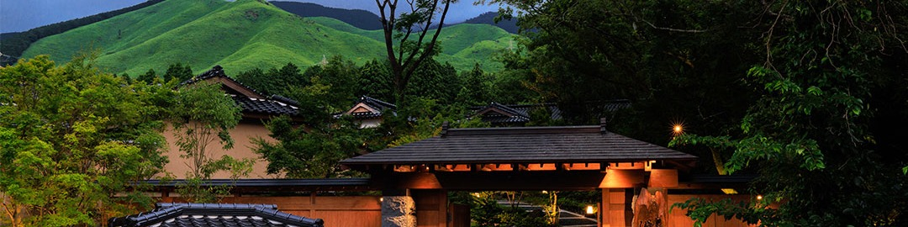

結婚式Wedding婚礼
森の隠れ家でIn the forest森中之约
大切な人と、静けさの中で。
With those closest to you — in stillness.
与最重要的人 · 于寂静之中。
森と風のなかで、親しいゲストとつくる少人数の結婚式。
2 名から 18 名まで、阿蘇の自然に囲まれた一日をお過ごしください。 An intimate wedding among the forests of Aso, for two to eighteen guests — held in the quiet of the estate, with those closest to you. 于森林与微风之中，与至亲挚友共度的小型婚礼。
2 位至 18 位，在阿苏的自然里度过难忘的一日。
2 名から 18 名まで、阿蘇の自然に囲まれた一日をお過ごしください。 An intimate wedding among the forests of Aso, for two to eighteen guests — held in the quiet of the estate, with those closest to you. 于森林与微风之中，与至亲挚友共度的小型婚礼。
2 位至 18 位，在阿苏的自然里度过难忘的一日。
ご結婚式・アニバーサリーステイWeddings & Anniversary Stays婚礼 · 纪念日入住
ロケーションフォトLocation Photo婚纱外景摄影
ペア宿泊 一泊二食付きIncludes one night for two, dinner and breakfast含双人一晚二食住宿
550,000円 税込 605,000 円¥605,000 incl. tax含税 605,000 日元
- 一泊二食付きのご宿泊代（2 名分）One night with dinner and breakfast, for two一晚二食住宿（2 位）
- 衣裳・着付・ヘアメイク（新郎新婦 洋装または和装 各 1 点）Attire, dressing and hair & make-up (one Western or Japanese outfit each)礼服・著装・妆发（新郎新娘 西式或和式各 1 套）
- 会場使用料・支度部屋料Venue and dressing-room charges会场使用费・整装室费
- スナップ撮影 50 カット（データ）50 photographs, supplied as data快照 50 张（数据档）
- プロデュース料・アテンド料Production and attendant fees企划费・随行费
ウェディングパーティー AWedding Party A婚宴方案 A
前撮りロケ撮影付きWith a pre-ceremony location shoot含婚前外景摄影
600,000円 税込 660,000 円 ＋ 人数分の料飲代¥660,000 incl. tax, plus food and drink per guest含税 660,000 日元 ＋ 每位餐饮费
- 衣裳・着付・ヘアメイク（新郎新婦 各 1 点）・装花一式Attire, dressing, hair & make-up, and all floral arrangements礼服・著装・妆发・花艺全套
- 写真：前撮りロケ 50 カット＋スナップ 200 カット（データ）＋集合写真Photography: 50 location shots, 200 candid shots as data, and a group portrait摄影：外景 50 张＋快照 200 张（数据档）＋团体照
- 会場使用料・支度部屋料・コーディネート料・プロデュース料・アテンド料Venue, dressing room, coordination, production and attendant fees会场・整装室・统筹・企划・随行费
- 無料送迎バス 1 台One complimentary shuttle bus免费接驳巴士 1 辆
ウェディングパーティー BWedding Party B婚宴方案 B
前撮りロケ撮影 ＋ ペア宿泊（朝食付き）Location shoot plus one night for two with breakfast含外景摄影与双人一晚住宿（附早餐）
720,000円 税込 792,000 円 ＋ 人数分の料飲代¥792,000 incl. tax, plus food and drink per guest含税 792,000 日元 ＋ 每位餐饮费
- 一泊朝食付きのご宿泊代（2 名分）One night with breakfast, for two一晚附早餐住宿（2 位）
- プラン A に含まれるもの一式Everything included in Party A方案 A 的全部内容
- ご宿泊のお部屋は旅館の指定となりますThe villa is allocated by the ryokan住宿客房由本馆指定
パーティーについてAbout the party关于婚宴
| 対応人数Guests人数 | 2 名〜18 名2 to 182 至 18 位 |
| 料飲代Food & drink餐饮费 | お一人につき 20,000 円〜（フリードリンク含む）From ¥20,000 per guest, free-flow drinks included每位 20,000 日元起（含无限畅饮） |
| 開始時間Starts开始时间 | 12:00〜（約 2 時間）12:00, about two hours12:00 起（约 2 小时） |
追加になる費用Additional charges另计费用
| 旅館外での撮影Off-site shoot馆外拍摄 | 熊本城コース・阿蘇コース 各 ＋50,000 円（税込 55,000 円）Kumamoto Castle or Aso course, ¥50,000 each (¥55,000 incl. tax)熊本城路线・阿苏路线 各 ＋50,000 日元（含税 55,000 日元） |
| 土日曜日のご利用Saturdays and Sundays週六日举行 | ＋50,000 円（税込 55,000 円）¥50,000 (¥55,000 incl. tax)＋50,000 日元（含税 55,000 日元） |
| 衣裳の追加Extra outfits加租礼服 | 2 点目以降はオプションとなりますAvailable as an option from the second outfit第 2 套起为加购项目 |
ご結婚式のお問い合わせは、ブライダル事業パートナー『ラヴィアンシェリー』が承ります。まずは旅館（096-279-1800／10:00–18:00）へお電話下さいませ。 Weddings are handled by our bridal partner, La Vie en Chérie. Please call the ryokan first on +81 (0)96-279-1800 (10:00–18:00 JST). 婚礼相关事宜由婚礼合作伙伴「La Vie en Chérie」承办。请先致电本馆 +81 (0)96-279-1800（10:00–18:00 日本时间）。